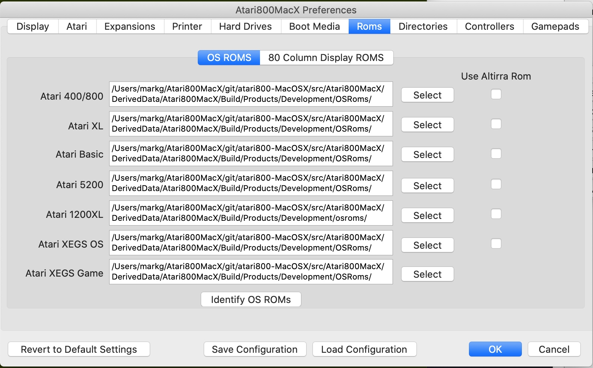

This tab allows you to chose the ROM files used in the emulation of the
Atari. These files are not provided with the emulator. To
select
the file, press the select button, and the chosen filename will appear
in
the text field. There are two types of ROMs. The first type of ROMs are the standard Operating System ROMs. By default, files in the OSRoms folder in the
Atari800MacX
folder are chosen, with standard names of atariosa.rom, atariosb.rom,
atarixl.rom,
ataribas.rom, and a5200.rom.
The second type of ROMs selected on this tab are those for two
of the types of 80 Column graphics display cards. (Note, there is a 3rd type of ROM, those for PBI expansions, and they are selected on the Expansions tab).
(Details about the operation of the 80 column cards may be found in the Display Menu help page.)
